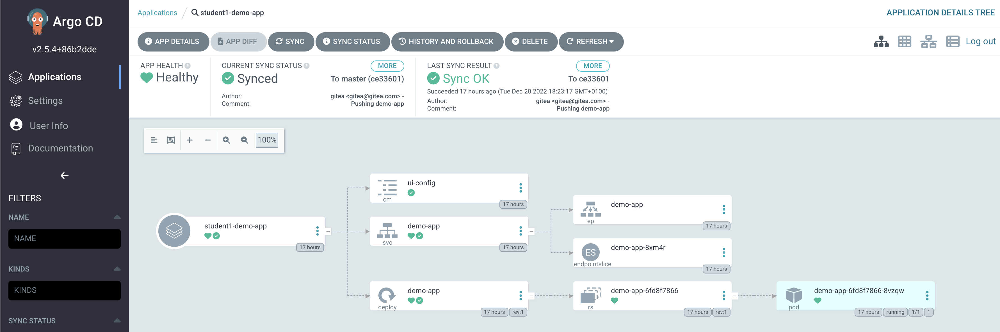

Overview Yor credentials for logging in into every application are: User: %USER% Password: %USER% Gitea Gitea is a web-based collaborative software platform for hosting software development version control using Git, as well as other collaborative features like bug tracking, code review, kanban boards, tickets, and wikis. Login into Gitea and take a look at these three repositories: base-chart: Helm Chart used in this laboratory to deploy applications and whose lifecycle we are going to work on. helm-ansible-pipeline: Contains the templates that form the base-chart pipeline (workflow) in Ansible Automation Platform. demo-app: Web application to demonstrate the deployment of an application using the chart. Shows the versions of the application and the Helm chart used for its deployment. During the laboratory you will have to make changes to this repositories. Laboratory instructions asume you are using Gitea web site, but you can clone these 3 repositories if you feel more comfortable doing and pushing changes in your laptop. Ansible Automation Platform Red Hat Ansible Automation Platform is an automation enterprise solution which enables you with a web-based user interface, a REST API, and a powerful task engine built on top of Ansible. It also containes hundreds of production-ready collections that you can integrate in your own code to save time and effort. You may login using your credentials and go to Resources > Templates section. You should see the following list of job and workflow templates ready to use: [JT] Create Test Namespace: Creates a namespace in OpenShift in which we will install our test scenario a run our validations. [JT] Delete Test Namespace: Deletes the namespace we created in OpenShift for testing. [JT] Helm Package Nexus: Packages our base-chart Helm and uploads it into our Nexus repository. [JT] Install Test Scenario: Installs our test scenario in the OpenShift namespace we created. [JT] Notify New Release: Notifies to our Developers about a new realase of the base-chart. [JT] Uninstall Test Scenario: Uninstalls our test scenario from the OpenShift namespace we created. [JT] Validate Test Scenario : Validates our test scenario. [WF] Base Chart Pipeline: Workflow we will use to deploy, validate and package our base-chart. During the laboratory you will have to make changes in the playbooks that make up the Workflow [WF] Base Chart Pipeline. You can find all these playbooks in the helm-ansible-pipeline repository in Gitea. OpenShift OpenShift is Red Hat’s enterprise-ready Kubernetes platform. OpenShift is hosting all the components used in this laboratory (AAP, Gitea, ArgoCD, Nexus, …). As a laboratory student, you have an already created namespace named %USER%-demo-app that contains an application used for testing the base-chart. Login into OpenShift and go to topology, select %USER%-demo-app namespace and click the Open Url button. You should see this: Nexus Nexus is an open source repository that supports many artifacts formats like Java, Npm or Helm. In this laboratory we use Nexus to store the base-chart Helm Chart packaged version. As part of this laboratory pipeline you will have to upload the chart to your own repository in Nexus. Login into nexus, sign in with your student user and go to Browse > %USER% to review the repository that we are going to use to store helm packages. Initially your demo-app is using a Helm Chart deployed by laboratory admins, you will change that in next sections! Argo CD Argo CD is a declarative, GitOps continuous delivery tool for Kubernetes. Follows the GitOps pattern of using Git repositories as the source of truth for defining the desired application state. In this laboratory we use Helm Charts to specify the Kubernetes manifests. Login into Argo CD via OpenShift and select Allow selected permissions: Acces your demo-app by clicking in your %USER%-demo-app to take a look at the application status and resources' tree:  Click on the APP DETAILS button to validate that Argo is pointing to your Gitea repository demo-app, master branch and the directory deploy: There are two key files in that repository: deploy/Chart.yaml: contains the reference to the Helm Chart that Argo CD will use to deploy the application: apiVersion: v2 name: demo-app description: Demo App type: application version: 1.0 appVersion: "1.0.0" dependencies: - name: base-chart repository: http://nexus.[cluster-api]/repository/helm/ version: 0.0.1 deploy/values.yaml: contains the values applied to the Helm Chart to deploy the application. base-chart: global: nameOverride: demo-app runtime: nginx size: S image: name: image-registry.openshift-image-registry.svc:5000/demo-app/demo-app tag: 1.0.0 extraLabels: app.kubernetes.io/part-of: demo-app deploy: replicas: 1 strategy: RollingUpdate ports: - targetPort: 8080 protocol: TCP name: http port: 8080 route: enabled: true targetPort: http tls: enabled: false configMap: injectEnv: true name: ui-config path: /usr/share/nginx/html/assets/config Lab Configuration 2. First Execution